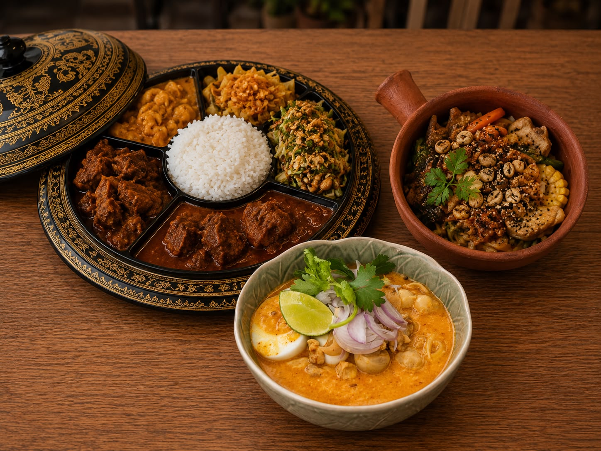
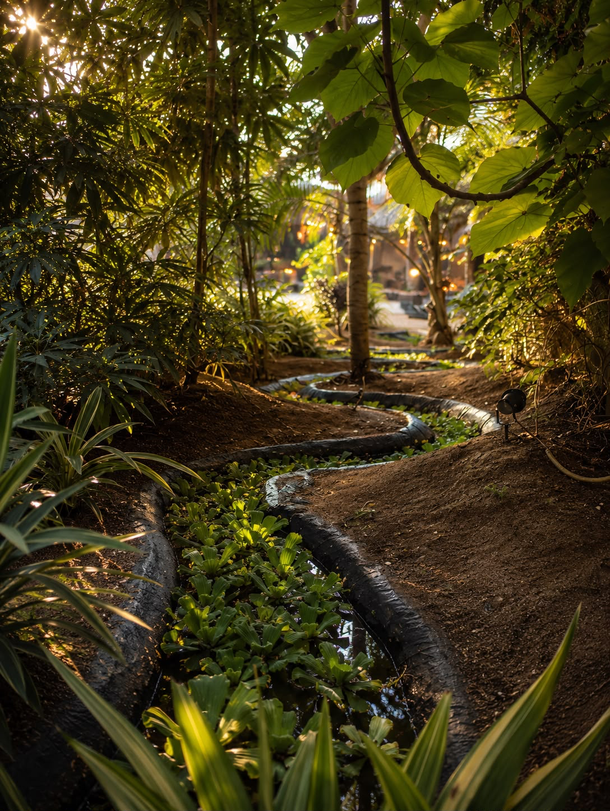
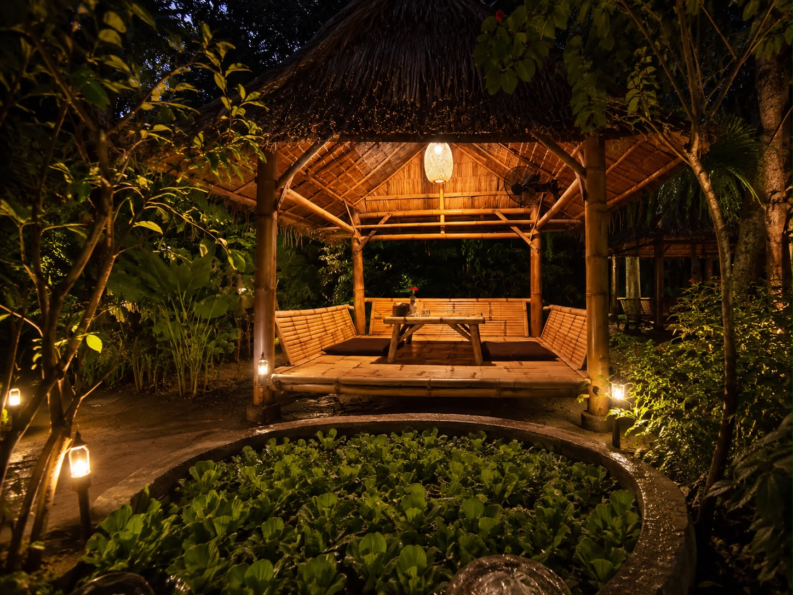
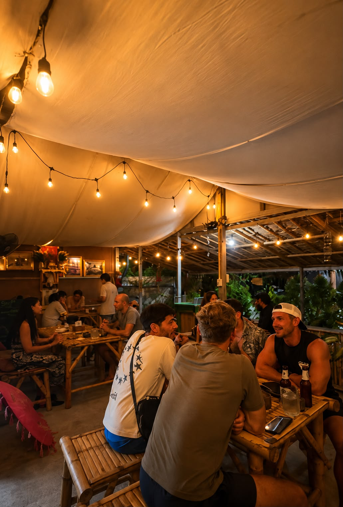

Lahphet Thoke
140Fermented tea leaf salad.

Traditional Burmese family kitchen · Koh Phangan
Authentic Burmese Cuisine
Traditional Burmese cuisine, freshly prepared every day

Every dish is prepared from family recipes, shared with warmth and cooked fresh each day.
Welcome to Thanaka, where every dish tells the story of our family and our home in Myanmar.
Our menu is inspired by treasured family recipes passed down by our mother and lovingly prepared using fresh, high-quality ingredients. We make our curries, sauces, and seasonings from scratch using clean, fresh ingredients and traditional cooking methods.
Burmese cuisine is known for its perfect balance of sweet, sour, salty, spicy, and bitter flavors. Every dish is freshly prepared, and we're happy to adjust the spice level and seasoning to suit your taste.
Whether you choose to relax in our peaceful garden, dine indoors, or enjoy takeaway or delivery, we hope every meal feels like sharing food with our family.
Thank you for being part of our journey. We look forward to welcoming you and sharing the authentic flavors of Burma with you. 🌺

Burmese tea, butterfly pea lemonade, fresh coconut, smoothies, milkshakes, and fruit mixes.
Atmosphere

Relax beneath the trees and enjoy authentic Burmese cuisine in our peaceful open-air garden.

Warm lighting, natural bamboo seating, and a relaxed atmosphere for sharing authentic Burmese family recipes.

GOOGLE REVIEW
RESERVATIONS
Reserve in advance to enjoy a relaxed Burmese dining experience in the heart of Koh Phangan.
💬 WhatsApp Message us to reserve your table 📷 Follow Us @thanaka_koh_phangan 📍 Find Us Open in Google Maps